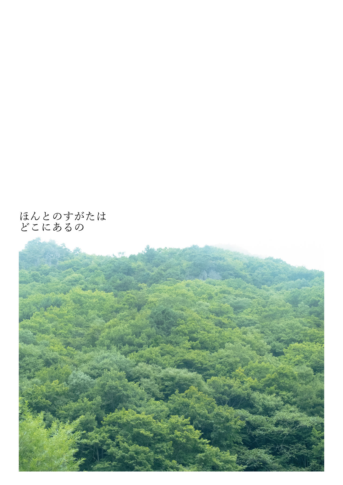

ここに載せているのは、テーマを決めずに撮った写真の中から、自分がなんとなくいいと思ったものである。 シャッターを切るときは、できるだけ自然な状態であることを大切にしている。何かを演出するのではなく、日常の中の断片を、そのまま切り取りたいと思っている。日常は、慣れてしまうとすぐに見過ごされてしまう。だからこそ、その断片を残しておきたい。そのため、レンズは単焦点を使い、日常の目線に近い距離で撮影している。 構図では、すべてを写さないようにしている。情報をすべてその場に残すのではなく、どこか含みのある一枚にすること。写っていない部分は、見る人に委ねたいと思う。